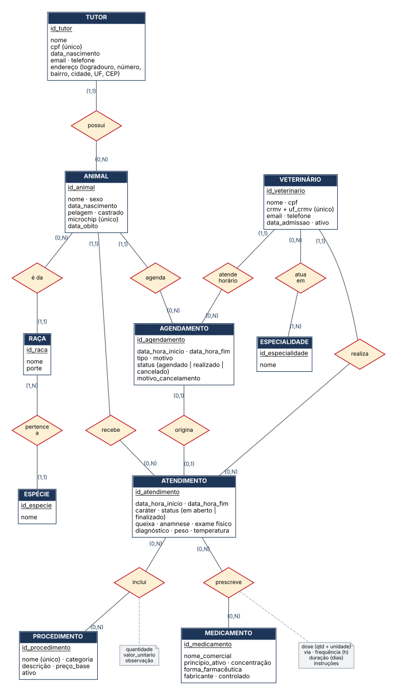
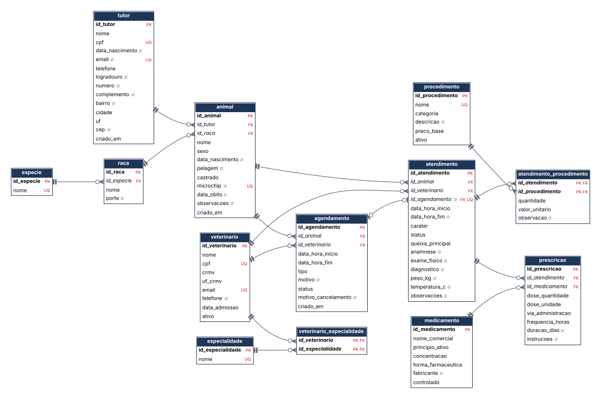

Universidade Federal de Uberlândia
Engenharia de Computação · Banco de Dados
Trabalho prático
Modelagem conceitual, lógica e física e implementação de um banco de dados relacional em PostgreSQL
| Aluno | Samuell — matrícula 12511ECP003 |
| SGBD | PostgreSQL 16 · pgAdmin 4 |
| Entregáveis | este relatório · sql/00_criar_banco.sql · 01_ddl.sql · 02_dml.sql · 03_consultas.sql |
Uberlândia — outubro de 2026
O sistema controla a rotina clínica e administrativa de uma clínica veterinária de pequeno porte: o cadastro de tutores e de seus animais, o corpo clínico de veterinários, a agenda de horários, os atendimentos realizados e, dentro de cada atendimento, os procedimentos executados e os medicamentos prescritos. O conjunto dos atendimentos de um animal forma o seu histórico clínico (prontuário).
O fluxo típico é: o tutor é cadastrado com seus animais; a recepção marca um horário com um veterinário; no dia, o atendimento é aberto a partir do agendamento (ou sem agendamento, em urgências); o veterinário registra queixa, exame, diagnóstico, procedimentos e prescrições; ao final, o atendimento é finalizado. Atendimentos que se estendem, como internações, ficam em aberto até a alta.
| Cód. | Regra | Como é garantida no banco |
|---|---|---|
| RN01 | Um animal pertence a um, e apenas um, tutor. Um tutor pode ter vários animais. | FK animal.id_tutor NOT NULL |
| RN02 | Todo animal tem uma raça, e toda raça pertence a uma espécie. Animais sem raça definida usam a raça “SRD” da sua espécie. | FKs NOT NULL; UNIQUE (id_especie, nome) em raca |
| RN03 | Um atendimento é realizado por um veterinário e gera zero ou mais procedimentos e prescrições. | FK NOT NULL; tabelas associativas |
| RN04 | O agendamento tem status AGENDADO, REALIZADO ou CANCELADO; cancelar exige motivo. | CHECK de domínio e CHECK condicional |
| RN05 | Um veterinário não pode ter dois horários ativos sobrepostos. | Restrição de exclusão GiST |
| RN06 | Um agendamento gera no máximo um atendimento, do mesmo animal; ao gerar, passa a REALIZADO. Agendamento cancelado não gera atendimento. | UNIQUE + FK composta + gatilhos |
| RN07 | Atendimento é EM_ABERTO ou FINALIZADO; só o finalizado tem data/hora de término. | CHECK de coerência |
| RN08 | O valor cobrado de um procedimento é o da data do atendimento; reajustes de tabela não alteram o histórico. | Coluna valor_unitario + gatilho de preço padrão |
| RN09 | Animais com óbito registrado não recebem novos atendimentos; o histórico é preservado. | Gatilho + ON DELETE RESTRICT |
| RN10 | Profissionais desligados e procedimentos descontinuados são inativados, nunca apagados. | Coluna ativo; FKs RESTRICT |
O Diagrama Entidade-Relacionamento (Figura 1) usa a notação de Chen: retângulos são entidades (com seus atributos e o identificador sublinhado), losangos são relacionamentos e as notas cinzas trazem atributos dos relacionamentos N:N. A cardinalidade (mín, máx) escrita junto a uma entidade indica quantas ocorrências dela se associam a uma ocorrência da entidade do outro lado. Mínimo 0 significa participação parcial; mínimo 1, participação total.

| Relacionamento | Entidades | Card. | Participação | Leitura |
|---|---|---|---|---|
| possui | Tutor — Animal | 1:N | Animal total · Tutor parcial | Todo animal tem exatamente um tutor; um tutor pode estar cadastrado ainda sem animais. |
| é da | Animal — Raça | N:1 | Animal total · Raça parcial | Todo animal tem uma raça; podem existir raças sem animais. |
| pertence a | Raça — Espécie | N:1 | Ambas totais | Toda raça é de uma espécie; toda espécie tem ao menos a raça SRD. |
| atua em | Veterinário — Especialidade | N:N | Veterinário total · Especialidade parcial | Cada veterinário tem uma ou mais especialidades. |
| agenda | Animal — Agendamento | 1:N | Agendamento total | Cada horário é de um animal. |
| atende horário | Veterinário — Agendamento | 1:N | Agendamento total | Cada horário é com um veterinário. |
| origina | Agendamento — Atendimento | 1:1 | Ambas parciais | Um horário gera no máximo um atendimento; urgências não têm horário. |
| recebe | Animal — Atendimento | 1:N | Atendimento total | O histórico clínico do animal é o conjunto dos seus atendimentos. |
| realiza | Veterinário — Atendimento | 1:N | Atendimento total | Cada atendimento é responsabilidade de um veterinário (RN03). |
| inclui | Atendimento — Procedimento | N:N | Ambas parciais | Atributos: quantidade, valor unitário, observação. |
| prescreve | Atendimento — Medicamento | N:N | Ambas parciais | Atributos: dose, via, frequência, duração, instruções. |
vw_historico_clinico.O mapeamento do DER para o modelo relacional seguiu as regras usuais: cada entidade virou uma relação com chave primária própria; relacionamentos 1:N viraram chave estrangeira no lado N; o 1:1 parcial origina virou FK opcional e única em atendimento; e os N:N viraram relações associativas. Abaixo, o esquema em notação textual (chave primária sublinhada, chave estrangeira em itálico, chave candidata marcada com U).
ESPECIE (id_especie, nomeU)
RACA (id_raca, id_especie → ESPECIE, nome, porte) — (id_especie, nome)U
TUTOR (id_tutor, nome, cpfU, data_nascimento, emailU, telefone, logradouro, numero, complemento, bairro, cidade, uf, cep, criado_em)
ANIMAL (id_animal, id_tutor → TUTOR, id_raca → RACA, nome, sexo, data_nascimento, pelagem, castrado, microchipU, data_obito, observacoes, criado_em)
VETERINARIO (id_veterinario, nome, cpfU, crmv, uf_crmv, emailU, telefone, data_admissao, ativo) — (uf_crmv, crmv)U
ESPECIALIDADE (id_especialidade, nomeU)
VETERINARIO_ESPECIALIDADE (id_veterinario → VETERINARIO, id_especialidade → ESPECIALIDADE)
AGENDAMENTO (id_agendamento, id_animal → ANIMAL, id_veterinario → VETERINARIO, data_hora_inicio, data_hora_fim, tipo, motivo, status, motivo_cancelamento, criado_em)
ATENDIMENTO (id_atendimento, id_animal → ANIMAL, id_veterinario → VETERINARIO, id_agendamentoU, data_hora_inicio, data_hora_fim, carater, status, queixa_principal, anamnese, exame_fisico, diagnostico, peso_kg, temperatura_c, observacoes) — (id_agendamento, id_animal) → AGENDAMENTO(id_agendamento, id_animal)
PROCEDIMENTO (id_procedimento, nomeU, categoria, descricao, preco_base, ativo)
ATENDIMENTO_PROCEDIMENTO (id_atendimento → ATENDIMENTO, id_procedimento → PROCEDIMENTO, quantidade, valor_unitario, observacao)
MEDICAMENTO (id_medicamento, nome_comercial, principio_ativo, concentracao, forma_farmaceutica, fabricante, controlado) — (nome_comercial, concentracao, forma_farmaceutica)U
PRESCRICAO (id_prescricao, id_atendimento → ATENDIMENTO, id_medicamento → MEDICAMENTO, dose_quantidade, dose_unidade, via_administracao, frequencia_horas, duracao_dias, instrucoes) — (id_atendimento, id_medicamento)U

scripts/gerar_diagrama_logico.py). Negrito = PK; itálico = FK; ∅ = aceita nulo; UQ = único. Notação pé-de-galinha: ‖ exatamente um, ○| zero ou um, ○< zero ou muitos.| Tipo | Onde | Finalidade |
|---|---|---|
| Entidade (PK) | Todas as tabelas | Chave substituta IDENTITY; PK composta nas associativas puras (veterinario_especialidade, atendimento_procedimento). |
| Chaves candidatas | cpf, email, crmv+UF, microchip, nomes de catálogo | Impedem cadastros duplicados no mundo real mesmo com PK artificial. |
| Referencial (FK) | 14 chaves estrangeiras | RESTRICT onde há histórico a preservar; CASCADE só em itens que não existem sem o pai (procedimentos e prescrições do atendimento, especialidades do veterinário, agenda do animal). |
| FK composta | atendimento (id_agendamento, id_animal) | Garante que o atendimento vinculado a um horário seja do mesmo animal do horário (RN06). |
| Domínio (CHECK) | status, tipo, caráter, categoria, sexo, porte, via, unidade, UF | Restringe colunas a valores válidos. |
| Formato (CHECK) | CPF, telefone, CEP, e-mail, microchip, CRMV | Expressões regulares: só dígitos e no tamanho certo. |
| Semântica (CHECK) | agendamento, atendimento, animal, prescrição | Fim depois do início; cancelado ⇔ tem motivo; finalizado ⇔ tem fim; peso > 0; temperatura entre 30 e 45 °C; óbito ≥ nascimento; duração do horário ≤ 8 h. |
| Exclusão (GiST) | agendamento | Mesmo veterinário + intervalos sobrepostos é proibido, ignorando cancelados (RN05). |
| Gatilhos | atendimento, agendamento, atendimento_procedimento | Regras que envolvem mais de uma tabela (RN06, RN08, RN09). |
1ª Forma Normal. Todos os atributos são atômicos e não há grupos repetitivos. Os pontos que exigiram decisão foram:
2ª Forma Normal. Só duas tabelas têm chave primária composta. Em veterinario_especialidade não há atributos não-chave. Em atendimento_procedimento (PK = id_atendimento + id_procedimento), quantidade, valor_unitario e observacao dependem da chave inteira. Em especial, valor_unitario não depende só do procedimento: é o preço praticado naquele atendimento (pode ter desconto ou retorno gratuito). O preço de tabela, que depende só do procedimento, está em procedimento.preco_base. As demais tabelas têm PK simples, logo estão trivialmente em 2FN.
3ª Forma Normal. Nenhum atributo não-chave depende de outro atributo não-chave:
animal guarda apenas id_raca. Guardar também a espécie criaria a dependência transitiva id_animal → id_raca → id_especie; a espécie é obtida pela raça.vw_animal) e valor total do atendimento (soma dos itens).atendimento, poderia parecer que id_agendamento → id_animal é transitiva. Mas id_agendamento é opcional (urgências não têm horário), então ele não determina o animal em todas as tuplas e id_animal precisa existir por si. A coerência entre os dois é garantida pela FK composta. O veterinário do atendimento também não é derivável do agendamento, porque outro profissional pode cobrir o horário.Em todas as tabelas, os únicos determinantes são chaves candidatas, de modo que o esquema também atende à Forma Normal de Boyce-Codd.
Redundância controlada. O status REALIZADO do agendamento pode ser deduzido da existência de um atendimento vinculado. Ele foi mantido de propósito porque a agenda é consultada o tempo todo e filtrar por uma coluna é mais simples e barato que fazer um anti-join. Para não haver divergência, o valor é mantido por gatilho (seção 4.4), e não pela aplicação.
O SGBD é o PostgreSQL, como recomendado. Além de ser livre e padrão de mercado, ele oferece recursos que este projeto usa diretamente: TIMESTAMPTZ, colunas IDENTITY do padrão SQL, índices parciais e de expressão, restrições de exclusão com GiST, gatilhos em PL/pgSQL e comentários de catálogo. Todos os objetos ficam no esquema clinica, separado do public.
| Dado | Tipo | Justificativa |
|---|---|---|
| Chaves primárias | INTEGER / SMALLINT GENERATED BY DEFAULT AS IDENTITY | IDENTITY é o padrão SQL e substitui o SERIAL legado: a sequência pertence à coluna. SMALLINT (2 bytes) nos catálogos que nunca passarão de dezenas de linhas (espécie, especialidade); INTEGER (4 bytes, até 2,1 bi) nas demais. |
| CPF, CEP, UF, microchip | CHAR(11), CHAR(8), CHAR(2), CHAR(15) | Tamanho fixo por definição. São armazenados como texto, não como número, porque podem começar com zero e nunca entram em contas. O formato é validado por CHECK com expressão regular. |
| Telefone | VARCHAR(11) | 10 ou 11 dígitos (fixo ou celular com DDD), sem máscara. A formatação fica na apresentação. |
| Nomes, e-mail, motivos | VARCHAR(n) | Limite explícito documenta o tamanho esperado e impede lixo. No PostgreSQL, VARCHAR(n) não ocupa mais espaço que o conteúdo. |
| Anamnese, diagnóstico, instruções | TEXT | Texto clínico livre, sem limite natural de tamanho. |
| Valores monetários | NUMERIC(10,2) | Aritmética decimal exata. REAL/DOUBLE causariam erros de arredondamento em somas de faturamento; o tipo MONEY depende do locale do servidor. |
| Peso | NUMERIC(6,3) | Três casas decimais para pesar aves e roedores (o periquito dos dados pesa 0,035 kg); até 999,999 kg cobre cães gigantes. |
| Temperatura | NUMERIC(3,1) | Uma casa decimal, faixa validada entre 30 e 45 °C. |
| Dose | NUMERIC(8,3) + VARCHAR(10) | Doses fracionadas (0,25 comprimido; 0,4 mL) com unidade controlada por CHECK. |
| Data e hora de eventos | TIMESTAMPTZ | Guarda o instante absoluto (UTC) e exibe no fuso da sessão. Evita ambiguidade em mudanças de fuso ou horário de verão. O banco é configurado com timezone = America/Sao_Paulo. |
| Nascimento, óbito, admissão | DATE | Hora não é relevante. |
| Indicadores | BOOLEAN | castrado, ativo, controlado, com DEFAULT definido. |
| Status, tipo, categoria | VARCHAR + CHECK (... IN ...) | Preferido a ENUM porque incluir ou remover um valor é só trocar a restrição. Com ENUM, remover um valor exige recriar o tipo. Também é mais portável. |
O PostgreSQL cria índices B-tree automaticamente para PKs e UNIQUE, mas não para chaves estrangeiras. Os índices abaixo foram criados para cobrir FKs usadas em junções e os filtros das consultas da seção 6. No total, o esquema tem 39 índices, contando os automáticos.
| Índice | Colunas / tipo | Justificativa |
|---|---|---|
ix_animal_tutor | animal (id_tutor) | “Animais do tutor” (Q3) e verificação da FK ao remover tutores. |
ix_animal_raca | animal (id_raca) | Junção animal → raça → espécie (Q4, visões). |
ix_agendamento_animal | agendamento (id_animal) | Agenda de um animal; suporte ao ON DELETE CASCADE. |
ix_atendimento_animal_data | atendimento (id_animal, data_hora_inicio DESC) | Composto: monta o histórico clínico já na ordem “mais recente primeiro”, sem etapa de ordenação. Também cobre a FK id_animal. |
ix_atendimento_vet_data | atendimento (id_veterinario, data_hora_inicio) | Composto: o ranking por período (Q2) filtra por veterinário e faixa de datas. A igualdade vem primeiro e o intervalo depois, que é a ordem que o B-tree aproveita. |
ix_agendamento_futuro | agendamento (data_hora_inicio) WHERE status = 'AGENDADO' | Parcial: só indexa horários pendentes, que são poucos perto do histórico de realizados e cancelados. Atende Q1 e a tela de agenda. |
ix_atendimento_em_aberto | atendimento (id_animal) WHERE status = 'EM_ABERTO' | Parcial: atendimentos em aberto são uma fração mínima da tabela (Q1, painel de internados). |
ix_tutor_nome_lower | tutor (lower(nome) text_pattern_ops) | De expressão: busca no balcão por lower(nome) LIKE 'mar%', sem diferenciar maiúsculas. |
ix_atproc_procedimentoix_prescricao_medicamentoix_vetesp_especialidade | 2ª coluna das associativas | A PK composta só serve buscas pela 1ª coluna. Esses índices cobrem o caminho inverso, como “onde este medicamento foi prescrito” (Q4), além de verificações de FK. |
ex_agendamento_conflito_vet | GiST (id_veterinario, tstzrange(início, fim)) | Criado pela restrição de exclusão. Além de impedir conflitos, acelera “horários do veterinário que se sobrepõem a X”. |
Com o volume de teste (dezenas de linhas), o planejador ainda prefere varredura sequencial, o que é o comportamento correto para tabelas pequenas. Os índices foram dimensionados para o uso real, com anos de histórico.
ativo; animais têm data_obito. Com FKs RESTRICT, o banco impede apagar quem tem histórico.01_ddl.sql recria o esquema do zero e todo o DDL e DML roda entre BEGIN e COMMIT: se algo falhar, nada fica pela metade.COMMENT ON, visível no pgAdmin (aba Properties) e em ferramentas de documentação.pk_, fk_, uq_, ck_, ex_, ix_), o que torna as mensagens de erro autoexplicativas.vw_animal (animal + raça + espécie + idade + tutor) e vw_historico_clinico (prontuário consolidado) encapsulam junções frequentes.btree_gist, necessária para combinar = e && na mesma restrição de exclusão. É uma extensão trusted: o dono do banco a instala sem precisar de superusuário.A tabela que concentra mais regras ilustra o estilo adotado em todo o script:
{{DDL:agendamento}}| Gatilho | Momento | Regra |
|---|---|---|
trg_atendimento_vincula_agendamento | AFTER INSERT/UPDATE em atendimento | Barra atendimento de agendamento cancelado e marca o agendamento como REALIZADO (RN06). |
trg_agendamento_valida_status | BEFORE UPDATE em agendamento | Agendamento que já gerou atendimento não pode ser cancelado nem reaberto (RN06). |
trg_atendimento_valida_animal | BEFORE INSERT/UPDATE em atendimento | Barra atendimento com data posterior ao óbito (RN09). |
trg_atproc_preco_padrao | BEFORE INSERT em atendimento_procedimento | Se o valor não for informado, usa o preço de tabela vigente (RN08). |
| Arquivo | Conteúdo |
|---|---|
sql/00_criar_banco.sql | Cria o banco clinica_vet (UTF-8) e define o fuso. Roda conectado ao banco postgres, pois CREATE DATABASE não pode estar dentro de uma transação. |
sql/01_ddl.sql | Esquema, extensão, 13 tabelas com todas as restrições, índices, 4 funções e gatilhos, 2 visões e comentários. |
sql/02_dml.sql | Carga de dados, ajuste das sequências, 7 exemplos de UPDATE, 3 de DELETE e 7 testes de integridade comentados. |
sql/03_consultas.sql | As 5 consultas obrigatórias e 4 complementares. |
Os dados cobrem de janeiro de 2026 a janeiro de 2027: 30 atendimentos já realizados (quatro deles urgências ou emergências sem agendamento), duas internações em aberto, agendamentos futuros, cancelamentos com motivo, casos de não comparecimento, um óbito, um veterinário desligado e um procedimento descontinuado. A distribuição foi pensada para que cada consulta tenha resultado interessante: há empates no ranking, tutores com três animais, cinco espécies e pacientes de alto custo.
Os CPFs têm dígitos verificadores válidos, mas foram gerados aleatoriamente. As chaves são informadas na carga para deixar as referências legíveis, e as sequências IDENTITY são reposicionadas com setval ao final.
| # | Situação | O que demonstra |
|---|---|---|
| 8.1 | Exame do Simba concluído: atendimento finalizado com laudo. | Transição EM_ABERTO → FINALIZADO respeitando o CHECK de coerência. |
| 8.2 | Registro do óbito do Frajola. | Exclusão lógica; concatenação em texto. |
| 8.3 | Cancelar os agendamentos futuros de animais com óbito. | UPDATE ... FROM com junção. |
| 8.4 | Marcar como cancelados (no-show) os horários passados sem atendimento. | UPDATE com NOT EXISTS. |
| 8.5 | Reajuste de 8% nas vacinas. | Atualização em massa; o histórico não muda (RN08). |
| 8.6 | Desligamento do Dr. Fábio. | Inativação em vez de exclusão (RN10). |
| 8.7 | Tutor trocou telefone e e-mail. | Atualização localizada pela chave candidata (CPF). |
| # | Situação | O que demonstra |
|---|---|---|
| 9.1 | Tramadol prescrito por engano no atendimento do hamster. | Remoção de item filho pela chave natural (atendimento + medicamento). |
| 9.2 | Citologia lançada sem ter sido feita. | Remoção em tabela associativa pela PK composta. |
| 9.3 | Cadastro duplicado de tutor feito no balcão. | DELETE protegido por NOT EXISTS: só apaga cadastros sem animais. |
No fim de 02_dml.sql há comandos comentados que devem falhar. Todos foram executados e o banco recusou cada um com a mensagem esperada:
| Tentativa | Barrada por |
|---|---|
| Marcar horário sobreposto para a mesma veterinária | ex_agendamento_conflito_vet |
| Gerar atendimento de agendamento cancelado | gatilho fn_atendimento_vincula_agendamento |
| Vincular atendimento a agendamento de outro animal | FK composta fk_atendimento_agendamento |
| Atender animal após o óbito | gatilho fn_atendimento_valida_animal |
| Apagar tutor que tem animais | FK fk_animal_tutor (RESTRICT) |
| Cancelar agendamento sem motivo | ck_agendamento_cancel |
| Cancelar agendamento que já virou atendimento | gatilho fn_agendamento_valida_status |
Cada consulta é apresentada com o objetivo de negócio, o SQL exatamente como está em 03_consultas.sql, a explicação da lógica e o resultado obtido sobre os dados de teste. Os resultados foram gerados automaticamente pelo script que monta este PDF, executando as consultas no banco em 27/10/2026. Parâmetros como datas ficam em uma CTE params no início da consulta, para facilitar a troca no pgAdmin.
Objetivo: painel da recepção, com quem está em atendimento ou internado agora e quem tem horário marcado, já com o telefone do tutor para confirmação.
{{SQL:Q1}}Como funciona. Duas CTEs produzem conjuntos com as mesmas colunas: em_aberto (atendimentos com status EM_ABERTO) e futuros (agendamentos AGENDADO com início depois de now()). O UNION ALL junta os dois sem eliminar duplicatas, já que um animal pode estar internado e ter retorno marcado ao mesmo tempo, como o Max. A junção com vw_animal traz espécie, tutor e telefone. Os dois filtros correspondem aos índices parciais ix_atendimento_em_aberto e ix_agendamento_futuro.
Objetivo: medir a produtividade da equipe entre duas datas (aqui, de 01/01 a 31/10/2026).
{{SQL:Q2}}Como funciona. O período fica na CTE params. O ponto principal é o LEFT JOIN com o filtro de datas na cláusula ON: se o filtro estivesse no WHERE, veterinários sem atendimentos no período sumiriam do relatório. Por isso se conta count(at.id_atendimento), que ignora nulos, e não count(*). O FILTER conta urgências e emergências na mesma passada. Na consulta externa, RANK() numera as posições e repete a posição em empates (dois veterinários em 3º lugar, e o seguinte vai para 5º), e SUM() OVER () calcula o total geral para o percentual sem uma segunda consulta. O limite superior usa < data_fim + 1 para incluir o último dia inteiro, já que a coluna tem hora.
Objetivo: identificar os clientes com mais vínculo (candidatos a plano família) e ver o que já fizeram na clínica.
{{SQL:Q3}}Como funciona. A CTE tutores_multi seleciona os tutores com HAVING count(*) > 1. As outras três CTEs agregam, cada uma em seu próprio nível, os animais do tutor (string_agg ordenado), os atendimentos (com LEFT JOIN, para que um animal nunca atendido não suma) e os procedimentos com quantidade e valor. Agregar em CTEs separadas antes de juntar evita o problema da multiplicação de linhas: se tudo fosse juntado de uma vez, cada atendimento seria repetido para cada procedimento e as contagens sairiam infladas. A consulta final monta o resumo “Procedimento ×quantidade”, do mais frequente para o menos frequente.
Objetivo: apoiar o planejamento de estoque da farmácia e mostrar o perfil terapêutico de cada espécie.
{{SQL:Q4}}Como funciona. A espécie não está na prescrição: ela é alcançada pela cadeia prescrição → atendimento → animal → raça → espécie (seis tabelas). A CTE contagem agrupa por espécie e medicamento e conta prescrições e animais distintos. Animais distintos é relevante porque um animal crônico pode receber o mesmo remédio várias vezes, como o Zeus com o Vetmedin. Em seguida, DENSE_RANK() OVER (PARTITION BY especie ...) reinicia a numeração a cada espécie. Foi usado DENSE_RANK em vez de ROW_NUMBER para que medicamentos empatados não sejam descartados arbitrariamente, e o filtro posicao <= 3 traz o “top 3” de cada espécie.
Objetivo: “quais pacientes gastaram acima da média?”, para acompanhar casos de alto custo (doenças crônicas, cirurgias) e oferecer planos de saúde pet.
{{SQL:Q5}}Como funciona. A consulta junta seis tabelas (animal, raça, espécie, tutor, atendimento, atendimento_procedimento) e agrega o gasto por animal com SUM(quantidade × valor_unitario), usando o valor cobrado e não o preço de tabela. A subconsulta, em uma tabela derivada aninhada, primeiro calcula o gasto de cada paciente e depois a média desses gastos. A média por paciente é diferente da média por item, que seria distorcida por atendimentos com muitos itens. Como a subconsulta devolve uma única linha, o CROSS JOIN a disponibiliza tanto no HAVING, que filtra quem está acima, quanto no SELECT, que mostra quanto acima está, em %. Atende aos três requisitos: junção de três ou mais tabelas, agregação e subconsulta.
Quatro consultas extras, também em 03_consultas.sql, cobrem necessidades comuns da clínica e exercitam outros recursos do SQL.
Usa a visão vw_historico_clinico, que consolida procedimentos e prescrições de cada atendimento com LEFT JOIN LATERAL e string_agg. Os atendimentos sem itens continuam aparecendo. A consulta só filtra pelo animal informado em params.
Transforma linhas em colunas (pivot) com SUM(...) FILTER (WHERE ...), uma coluna por categoria, agrupando por date_trunc('month', ...). O pico de outubro corresponde à gastropexia de emergência do Max.
Lista de contatos para campanha de vacinação. O anti-join NOT EXISTS encontra quem não tem vacina recente, uma subconsulta escalar correlacionada mostra a data da última vacina (vazia quando nunca vacinou) e o filtro vivo exclui o paciente que veio a óbito.
Distribuição dos agendamentos por status em uma única passada sobre a tabela, usando agregações condicionais com FILTER.
O banco implementado cobre todas as entidades e regras pedidas e leva para dentro do SGBD as regras que, em muitos sistemas, ficam só na aplicação: conflito de agenda, vínculo coerente entre agendamento e atendimento, preço histórico e bloqueio pós-óbito. Assim, qualquer cliente que acesse o banco, seja o pgAdmin, uma API ou um script, encontra as mesmas garantias. O esquema está em 3FN (e FNBC), com uma única redundância, documentada e mantida por gatilho.
Como evoluções naturais, ficam: controle de estoque de medicamentos (com baixa automática a partir das prescrições), um módulo financeiro de pagamentos, uma carteira de vacinação com datas de reforço e perfis de acesso (papéis recepcao, veterinario, gestor) com GRANT por esquema e segurança em nível de linha.
postgres, abra Query Tool e carregue 00_criar_banco.sql. Selecione só o CREATE DATABASE e execute (F5); depois selecione o restante e execute de novo. O pgAdmin envia o texto todo de uma vez, e CREATE DATABASE não pode rodar junto com outros comandos.clinica_vet e abra uma Query Tool nele.01_ddl.sql, 02_dml.sql e 03_consultas.sql. No último, selecione uma consulta por vez e execute com F5 para ver cada resultado na grade.SET search_path TO clinica;.psql -U postgres -f sql/00_criar_banco.sql psql -U postgres -d clinica_vet -f sql/01_ddl.sql psql -U postgres -d clinica_vet -f sql/02_dml.sql psql -U postgres -d clinica_vet -f sql/03_consultas.sql
Ou, com Docker, docker compose up sobe um PostgreSQL 16 já com o esquema e os dados carregados (ver README.md).
As consultas Q1 e C3 usam now(). Os dados foram construídos com 27/10/2026 como “hoje”; se forem executadas muito depois dessa data, os agendamentos futuros deixarão de ser futuros. Basta trocar now() por uma data fixa na CTE params.